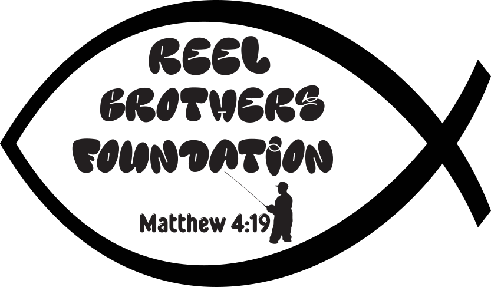
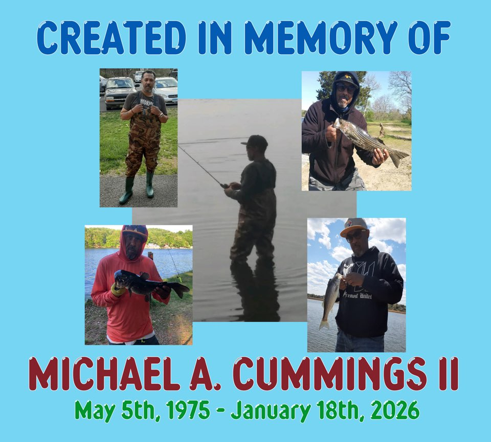

Fishers of Men
Grief changes everything. You don't have to navigate it alone.
The Reel Brothers Foundation walks with people through the loss of someone who mattered, helping them find their footing in the new normal, with a particular focus on young adults.
"Come, follow me," Jesus said, "and I will send you out to fish for people."Matthew 4:19 · NIV

Our Mission
Walking with you on your journey
The Reel Brothers Foundation is a faith based private operating foundation that provides programming and resources to people navigating grief related to the loss of a significant loved one, with a particular focus on young adults.
Each program is tied to a biblical figure, tied to one of the stages of grief, and is attached to a specific scripture. This foundation was created in the memory of Michael Anthony Cummings II and is rooted in the scripture Matthew 4:19.
We help navigate the new normal by walking with you on your journey.
How the work is built
The Four Pillars
Every program the foundation runs stands on these four. They are the shape of the work, and the reason the fishing image sits at the center of everything.
Fishing
Time on the water, the practice that anchors the foundation and the memory it was built on.
Faith
Scripture as the frame for grief, with each program grounded in a specific passage and a biblical figure.
Fellowship
Being around people carrying something similar, so the weight is shared rather than carried alone.
Foundation
Rebuilding what steadies you, so the new normal has something solid underneath it.

Matthew 4:19
New International Version
"Come, follow me," Jesus said, "and I will send you out to fish for people."
King James Version
And he saith unto them, Follow me, and I will make you fishers of men.
Created in memory of
Michael Anthony Cummings II
May 5, 1975 to January 18, 2026
Reel Brothers was his idea, one he never got the chance to act on. This foundation carries his name and the thing he loved most. The fishing is not a metaphor borrowed for a brochure. It is where he was happiest, and it is why Matthew 4:19 sits at the center of the work.
The man in our mark is him, traced from a photograph of him standing in the water with a rod in his hands.
Read his story
Get Involved
Ways to walk alongside us
Whether you are carrying a loss yourself or want to help someone who is, there is a place for you here.
If you are grieving
Reach out. Programs are built for anyone navigating the loss of a significant loved one, with young adults as our particular focus. The first step is simply telling us you are there.
Reach outPartner with us
Churches, schools, and community organizations can help bring programming to the people who need it, whatever season of life they are in.
Start a conversationVolunteer
Tell us how you would like to help, and we will reach out as programs take shape.
Offer to helpGive
Online giving is not open yet
When it opens, this is where you will be able to give. Until then, the best ways to help are to reach out, share the work, or follow along.
Opening soon
Contact
Tell us you are there
Whatever brings you here, your message comes straight to our team.
If you are in crisis right now, please do not wait on us. Call or text 988 to reach the Suicide and Crisis Lifeline, any time, day or night. If you are in danger, call 911.
Reach the foundation online at reelbrothersfoundation.org